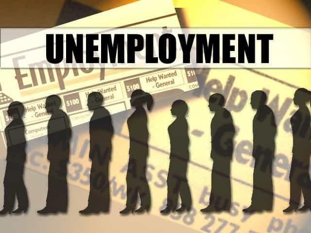

< < < Back
Why Every Man Must Take Control Of His Finances – Return Of Kings
The world that we live in is nothing like the world that our parents lived in. Back in the pre-globalization era, of roughly 1940-1990, it was completely feasible to expect a corporation to pay your salary and help ease you into retirement.
Back in this “golden era,” corporations actually looked out for their employees. Through various financial means, such as the Roth 401k or a conventional pension, employers could expect to be getting a reliable deposit bi-monthly in order to help them sustain their standard of living all throughout their retirement years.
It also used to be that a college degree was something to aspire to; something that guaranteed you a well-paying job, that would allow you to support a family of four with just a single college graduate’s income. This is obviously no longer the case.
Now, in 2016, the rate of unemployment for college graduates is officially 7%, but we all know the games that the economists play. The fact of the matter is that it’s more likely around 15%. Anybody who talks to a lot of people quickly realizes that unemployment rates are far higher than are being reported.
Now, corporations do not care about your well-being. You’re a year away from retiring and getting that pension? Oh, too bad—they’ll just fire you and you’ll never be able to cash out. And, with the rise of globalism, this has only gotten worse.
The Rise Of The Corporations

With the advent of globalism, your job is no longer safe. Anything that can be outsourced for cheaper, will be outsourced for cheaper; this is just a fact. If you work in a customer service based industry, expect your job to be replaced by machines within the next decade or two.
Just in the past 5 years, we’ve gone from needing 5-10 cashiers per grocery market to just 1-2, due to the automated checkout machines that have been incorporated. If you work a job that pays you minimum wage, expect to lose your job in the near future.
Don’t expect your 401k to cash out, either—as was clearly seen in 2008, with plenty of corporations going bankrupt, you can’t even count on them to follow the promises that they’ve made to you.
This is not to say that there won’t be more opportunities; we do in fact, live in an age of unprecedented opportunity, for those who are willing to take risks. This is the key, however, you must be willing to take risks. Most men, who are cowards deep down, will not thrive in this unprecedented period of uncertainty.
If, however, you follow some of the advice that I will lay out in this article, you can expect yourself to be a very wealthy man.
Job Uncertainty

A lot of people may read this article and proclaim that I’m being overly-negative, but anyone with a pair of eyes can see that I’m being realistic. There has never been a time, all throughout history, where so much change was happening so quickly. The only time that even can close to the rapid level of change occurring now was the Industrial Revolution.
And even then, jobs were at least certain—if you couldn’t continue to be a farmer, you could at least find a job in a nearby city as a factory worker or something. But now? How are you supposed to compete with some guy 10,000 miles away in India or China? You can’t.
The following is a list of jobs that will likely disappear within the next 10 years:
- Farmers
- Postal Workers
- Factory Workers
- Fishermen
- Power Plant Workers
- Basically Any Blue Collar Job Involving Technology and Not Manpower
Technology beating out our jobs, combined with stupid economic policies that slice medical professionals’ wages, means that we will be seeing a global economic shift in which jobs are available. Expect IT jobs to shoot through the roof to accommodate the surge in technology.
Also, expect jobs that require actual analysis and thought to go up. Anything that a machine can’t do (yet) is safe (for now). Things like writing well-thought out articles, providing emotional support, researching public policies, and anything that requires higher cognitive functioning will go up in demand.
Irresponsible Fiscal Policies
Ever since 2008, the amount of base currency has sky-rocketed as the Federal Reserve has flooded our economy with paper notes, in a futile attempt to jump-start our dying economy. I won’t get too far into the economics, because plenty of smarter men have explained this before me, but here’s the gist of it:
In 2008 our economy crashed due to a large number of faulty loans; after this crash, the Federal Reserve started what is known as “quantitative easing,” or “pumping fake money into our economy.”
In other words, by giving banks a ton of excess money, their hope was that these banks would lower their interest rates, leading to more businesses taking risks. This is all well and good, but the only problem is that there hasn’t been a fundamental change; it’s all fake, propped up by fiat currency. In other words, the value of our dollar is plummeting, and once we hit a critical mass, it will be worth next to nothing.
Every single nation that has employed a fiat currency has suffered a catastrophic economic collapse at some point in history:
- The Roman Empire in the 3rd century
- China in the 11th century
- France in the late 1700’s
- Germany after WWI
- Mexico in 1994
- Zimbabwe in 2008
- The USA…soon to come
Once our currency reaches a critical mass, it will be impossible to import anything due to our ridiculously low currency value. In other words, 85% of the goods that we depend on (from China, Thailand, and Malaysia) will no longer be accessible.
This is what we refer to here in ROK when we mention “shit hitting the fan,” and “the collapse.” Prepare yourself accordingly, because you can bet that there will be riots.
How Can You Profit?

Now that I’ve discussed all of the negative aspects of globalism and job uncertainty, I’d like to present the upside. Yes, we live in a world of unprecedented uncertainty, but we also live in a world of unprecedented opportunity.
There are three general ways that the men of ROK can profit off of the current uncertainty and upcoming economic changes:
- Get a skill that won’t be outsourced
- Utilize the internet
- Invest in precious metals
It’s really that simple. The first thing you must do is get a source of income that wont be quickly outsourced. Any trade will do, such as plumbing, electrical work, or oil rigging. Other skills such as writing, sales, or being able to think philosophically are good, too.
Next, utilize the internet to start setting up passive streams of revenue—I’ll talk more about this later. Lastly, put a large portion of your money into precious metals, because they’ve been shown to retain their value over millennia (unlike currencies).
Get A Skill That Won’t Be Outsourced
The very first thing that you must do is get a skill set that will be valuable 100% of the time. This includes things such as blue collar trades, medical professions, sales, and construction. Generally speaking, if you do something with your hands, or that requires a large amount of knowledge, you’re safe.
That being said, the times are changing—if you want to excel in a certain profession, I recommend that you make a website and learn some basic SEO. Advertise your skills online, and with some time and effort, you can be earning an additional $15,000+ per year.
If you don’t have a skill that you can perform as a service, consider making an eBook and selling it for $100/day in passive revenue. I know plenty of men, Roosh and myself included, that make a good income from selling eBooks. There’s virtually zero barrier to entry, and if you sell them through your own blog, you keep 100% of the profits.
I recommend that you also start saving up—this is key. Learn the principles of wealth and start integrating them into your life. Don’t waste money on frivolous things; save most of it up so that you can invest it wisely and ride the tailwinds of the upcoming economic changes.
Investing To Profit Off Global Uncertainty
As a few of my blog readers know, I almost tripled my money in just 5 months from investing in precious metals. I was smart enough to sense the upcoming global uncertainty, right before Brexit, and invested in ABX (a gold mining company) and SLW (a silver-streaming company). In fact, I tweeted about my investment right before these stocks nearly tripled; I want to help the manosphere gain more financial power in the world, because that’s what we need.
With Brexit, the Euro’s currency as well as certainty in the future of globalism plummeted, which netted me a nice 268% increase in my funds within just a few months. I got out of the stock market during the summer, but recently got back in after the precious metals industry slumped.
I expected the values of gold and silver to sky-rocket over the next 2-5 years, as we begin to see just how much global uncertainty there is. If Trump is elected, which I certainly believe he will be, then gold will shoot through the roof, with foreign speculators withdrawing their investments.
Not to mention the migrant crises going on all throughout Europe—with the EU slowly dying after Brexit set off the chain of events that it did, it seems that the only steady investment in the foreseeable future is gold. I recommend that every man have at least $5,000 worth of gold stashed away somewhere in case of a crisis. Gold is a universal currency, and with it, you can travel anywhere and pay for anything in any country.
But, don’t forget to invest in yourself—buy books, seminars, and video-courses. Spend time cultivating your mind through meditation and improving your body by working out. The best investment is truly yourself; knowledge cannot be taken from you, wisdom cannot be taken from you, and your body is your greatest asset.
Overall, the next 10 years will be extremely uncertain—the US may experience a resurgence of masculinity and we may experience millions of men taking back our country, or it may devolve into a dictatorship with Queen Hillary pushing an open borders policy. Either way, you need to prepare yourself for the impending changes.
Read More: There Is No Hedge Against Inflation